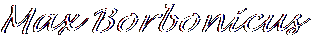

It’s so simple. We had the right idea with Springtime for Hitler, we just didn’t think big enough. This time, instead of making one terrible musical, we’re going to make lots of terrible musicals!
Since you’re helping us put on these shows, part of the profit will be yours. You’ll be a producer too! You just need to be brave enough to reach out and grab it. Dare to dream big—drink champagne, not ginger ale!
Now if Leo and I tried the same tricks again, the police would catch on right away. That’s why this time we changed our names—nobody will see it coming! So don’t call me Bialystock, I’m Max Borbonicus from now on. Bialystock’s gone, Borbonicus is a name you can trust. The same with Leo—He’s Leo Bodley now, not Bloom.
The time has come to make the magic of theater happen, but poorly. Think about what would make a good show, and do the opposite.
This letter isn’t important, it’s making the shows that is. Go to it!
Remember: we can do it, and GOOD LUCK!
